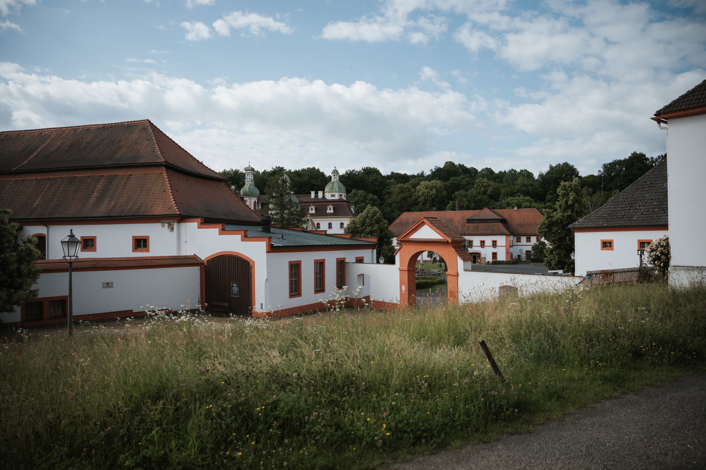
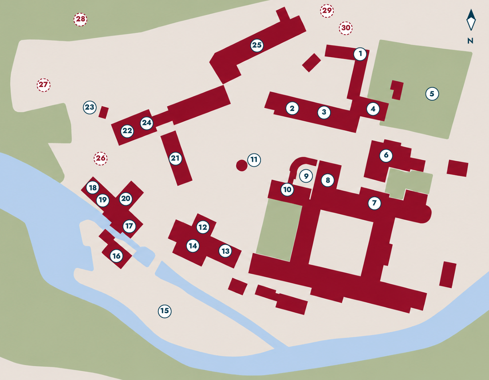

Veranstalter & Projektpartner · Organizatorzy i partnerzy projektu


Spotkania nad Nysą
Expert/-innen, Praktiker/-innen sowie Entscheidungsträger/-innen aus Deutschland und Polen kommen zusammen, um aktuelle Herausforderungen im Grenzraum zu diskutieren und konkrete Schritte für eine vertiefte Zusammenarbeit zu vereinbaren.
Eksperci, praktycy oraz decydenci z Niemiec i Polski spotykają się, aby omówić aktualne wyzwania na obszarze przygranicznym i uzgodnić konkretne kroki na rzecz pogłębionej współpracy.
„Aus zwei Tagen des Austauschs entsteht eine gemeinsame Neiße Agenda — konkrete Schritte für eine vertiefte deutsch-polnische Zusammenarbeit im Grenzraum."

In zweisprachiger Kleingruppenarbeit und thematischen Panels werden vier zentrale Arbeitsstränge bearbeitet. Das Ziel: eine gemeinsame Neiße Agenda.
Referat zur aktuellen Lage, anschließend Podiumsdiskussion mit Vertreter/-innen aller vier Panels.
Referat o aktualnej sytuacji, następnie dyskusja panelowa z przedstawiciel(k)ami wszystkich czterech paneli.
Die vollständige Liste der Referent/-innen wird in Kürze ergänzt. · Pełna lista prelegentów zostanie wkrótce uzupełniona.
Wir freuen uns auf Ihre Teilnahme und stehen für Rückfragen gern zur Verfügung.
Per E-Mail anmelden
Veranstalter & Projektpartner · Organizatorzy i partnerzy projektu
Gefördert durch Interreg Polska–Sachsen 2021–2027. Europäischer Fonds für regionale Entwicklung (EFRE). · Projekt: Niemiecko-polski obszar przygraniczny — spotkania nad Nysą